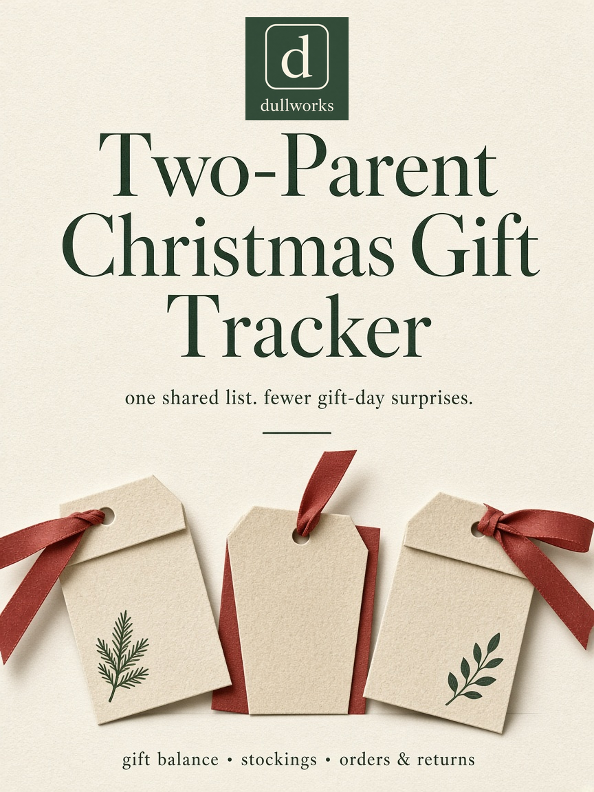
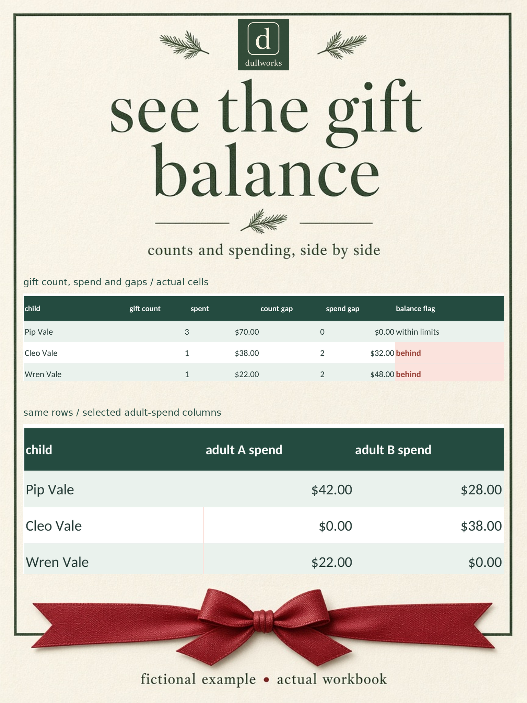
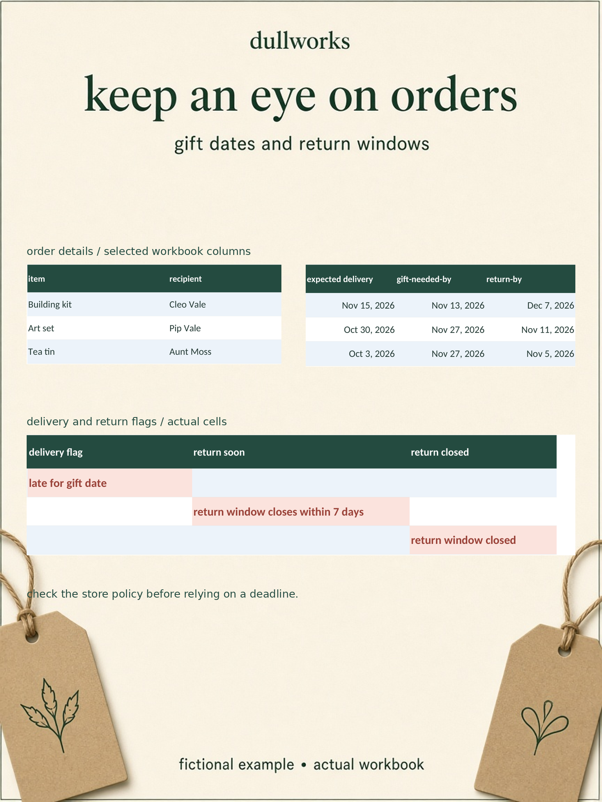

Two-Parent Christmas Gift Tracker
Shared gift list spreadsheet for Excel and Google Sheets that keeps the kids even.

US$9
BuyGet both in the Holiday Bundle for US$17.
One gift list for two shoppers
When two adults split the Christmas shopping, it's easy to lose track of who bought what, and to end up with one child getting more than the others. This workbook keeps one shared list, shows each child's gift count and spending side by side, and flags online orders that might miss the gift date or a return window.
What it does
- Gifts tab for up to 300 gifts. Each one has the recipient, the idea, who's buying it (adult A or B), the budget, the actual cost, the store, a status (idea, ordered, arrived, hidden, wrapped), where it's hidden and notes.
- Kid balance panel for up to 8 kids. It shows gift count and spend side by side, the gap to the top child, and a "behind" flag past a threshold you set. It also splits the spend between adult A and adult B.
- Stockings tab with items and spend for each child.
- Orders and returns log for up to 200 orders, with flags for "late for gift date", "return window closes within 7 days" and "return window closed".
- A one-page printable summary of budget against spend for each person and each adult.
- A blank copy and a filled example copy with fictional names.


What you get
- Two .xlsx workbooks (blank and example), with no macros
- A 3-page setup guide (PDF) covering Excel and Google Sheets
Good to know
- Tested in LibreOffice. Built only with functions that Excel and Google Sheets both support.
- Separate copies don't sync. For one shared list, upload it to Google Sheets and share it with the other adult.
- It's for recordkeeping only, not financial advice.
Digital download. All sales are final, no refunds.
Ready to plan? Get the Two-Parent Christmas Gift Tracker, US$9.